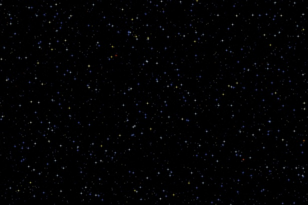

Kometa, zastarale vlasatice, je malé těleso sluneční soustavy složené především z ledu a prachu a obíhající většinou po velice výstředné eliptické trajektorii kolem Slunce. Komety jsou známé pro své nápadné ohony. Většina komet se po většinu času zdržuje za oběžnou dráhou Pluta, odkud občas nějaká přilétne do vnitřních částí sluneční soustavy. Velmi často jsou popisované jako „špinavé sněhové koule“ a z velké části je tvoří zmrzlý oxid uhličitý, methan a voda smíchaná s prachem a různými nerostnými látkami. V závislosti na gravitační interakci s planetami se dráha komet může změnit na hyperbolickou (a definitivně opustit sluneční soustavu) nebo na méně výstřednou. Například Jupiter je známý tím, že mění dráhy komet a zachycuje je na krátkých oběžných dráhách. Proto existují i komety, které se ke Slunci vrací pravidelně a často. Mezi ně patří například Halleyova nebo Kohoutkova kometa. Častost návratů komety v tomto smyslu znamená jednou za několik let až staletí. Komety mohou představovat potenciální hrozbu pro Zemi, v jejíž minulosti mohly způsobit některá hromadná vymírání. Obecně platí, že jsou mnohem nebezpečnější než asteroidy, neboť jejich rychlost může dosahovat až 3,5x vyšších hodnot.
V každém okamžiku lze na obloze pozorovat desítky komet, avšak pouze za pomoci velkých dalekohledů, pouhým okem jsou každý rok pozorovatelné pouze dvě až tři.
V minulosti byly komety považovány za znamení zmaru, někdy byly dokonce znázorňovány jako útok nebeských bytostí proti obyvatelům Země. Někteří autoři interpretují zmínky o „padajících hvězdách“ v Gilgamešovi, Janově Apokalypse a Knize Henoch jako zmínky o kometách, případně o bolidech. Babylóňané a někteří řečtí filosofové před Aristotelem považovali komety za nebeská tělesa, jiní pouze za atmosférické jevy. Aristotelés předložil ve svém díle pohled na komety, který nakonec na dvě tisíciletí ovládl západní myšlení. Odmítl názory několika dřívějších filozofů, že komety jsou planety nebo alespoň jevy planetám podobné s odůvodněním, že planety se pohybují jen okolo zvěrokruhu, kdežto komety se objevují v kterékoliv části oblohy. Později několik klasických filozofů jeho názor na komety napadlo. Až teprve v 16. století se dokázalo, že komety musí existovat mimo atmosféru Země. Roku 1577 byla několik měsíců viditelná jasná kometa. Dánský astronom Tycho Brahe využil měření polohy komety, která provedl on sám a několik dalších pozorovatelů na různých místech na Zemi, a zjistil, že kometa nemá žádnou měřitelnou paralaxu. V rámci přesností těchto měření to znamenalo, že kometa musí být alespoň čtyřikrát dále od Země než Měsíc.